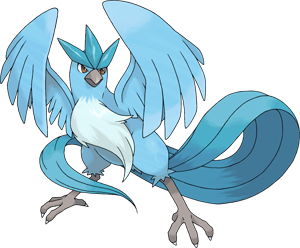

Welcome to Team Mystic
If you chose the wrong page, click on the following links to go to the correct page.

Observe. Adapt. Evolve.
Facts about this Mystic bird
Articuno, known as Freezer in Japan, is a fictional character in the Pokémon franchise. Articuno is one of the three winged mirage Legendary Pokémon, along with Zapdos and Moltres. It is a large bird, noted for its ability to control cold.
Its first appearence was in the Game Boy video games Pokemon Red, Blue and Yellow.
This is the very first Pokemon to appear in the latest version of Pokemon, Pokemon GO. It has made its very first apperence, of the three birds, in Ohio.